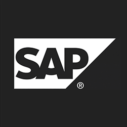

Kushal Gupta
Senior Analyst at Accenture
üëâ kushal11050@gmail.com
üëâ +91-9973041106
Skills & Qualifications
- ✔️ 5+ Years of experience in IT
- ✔️ 2+ Years experience with frontend development
- ✔️ Extensive knowledge in frontend library like ReactJs.
- ✔️ Good knowledge in HTML,CSS,JavaScript and ES6 features
Tech stack
React.js ContextAPI
HTML, CSS , JavaScript, ES6
GIT, GITHUB, VSCode
Work History
Feb 2022 - Sep 2022
- Designing and developing rich, engaging, and highly responsive user-facing interfaces and architectures on web applications using custom React components
- Writing application interface codes using JavaScript following React.js and Redux workflows.
- Developing reusable components and APIs, and compiling them into front-end libraries for future use
- Analyzing target users and user habits to improve the user interface to maximize interaction.
- Keeping up with the latest trends and technologies and infusing them to enhance the UI.
- Working closely with testing experts to address bugs, issues, and glitches.
- Ensuring that the UI remains technologically sound and aesthetically pleasing.
 ASSOCIATE CONSULTANT | WIPRO TECHNOLOGIES
May 2020 - Feb 2022
- Responsibilities includes Implementing, Configuring, Monitoring, Tunning and Troubleshooting the SAP technical environment well as Scheduling and executing the SAP system
- Optimize and Analyze the performance issue, Design architectures of the landscape
- Appling SAP Add-ons and Support Packages
- Evaluated diverse organizational systems to identify workflow, communication and resource utilization issues
- Helped team of 3-4 lead consultants optimize efficiency of current systems by conducting training sessions
- Provided outstanding service to clients to maintain and extendrelationship for future business opportunities
Sep 2019 - Apr 2020
- Developing new user-facing features using React.js
- Building reusable components and front-end libraries for future use
- Learn and understand user interactions
- Designing a modern highly responsive web-based user interface